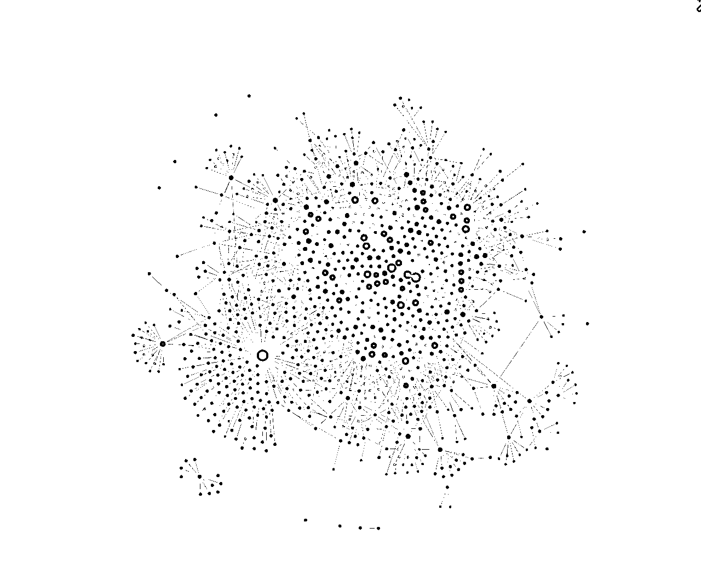

来源：https://ewtk6agpo4c.feishu.cn/docx/CaZ8drAN1o9n49x1O6xc0wXsnbc
hello大家好，我是悦悦子cheer，一个不被定义的INFJ，效率至上的工具重度使用者。
今天想跟大家分享的是我自己使用的知识库工具obsidian，以我自己阅读生财精华贴作为整个线索，讲解如何使用obsidian打造我自己的生财知识库。
主要包含6个部分的内容
我喜欢用电脑阅读精华贴，因为精读我都需要在obsidian里面记录原文的部分内容，以及自己在这一块的感想。有时候遇到一些技术贴，我会一边记录，一边实操，遇到有问题的还会记录下来。这样子的精读，一方面是自己记忆深刻，另一方面是因为全部保留在本地端，所以搜索很快速，随时随地能获取。
举个🌰
10月初跟希平聊天我们谈到了贵人和链接大佬，他使用的是数量战术，但是成功率有点低。
我立刻就想到了刚进生财看的七小老师那篇链接破圈的内容。
但是那一瞬间，我脑子里只有几个点
这个帖子我精读过，而且有记录
我好像打过标签，链接人
里面的内容非常干货
别的我就完全想不起来了～于是我就打开obsidian，搜索了“贵人”两个字，立刻就找到了七小老师那篇《生财破圈链接方法论》，打开文件到找到文件不超过10s。

直接导出pdf发给了希平，想不到希平竟然错过了这么好的东西！

因为足够详细地阅读，所以一定会有记忆点，这一点记忆就能快速帮我找到我想要的东西。
第二点是我用的插件dataview，在每个帖子设置好了内容以后，用公式就能自动汇总生成，看完的，看到一半的，准备看的，还能做成to-do list。
有一说一确实挺有成就感的，而且可以分类别，下次搜索的时候更快。

所有跟生财相关的内容，我都是用的一个obsidian库，包括我自己发布的内容，写作业啊，帖子什么的，都在这里。

上个月写flag复盘的时候发现怎么都找不到自己写作业的内容，就直接在obsidian目录里面找到了进生财的年度flag，完成了复盘。（生财会员日立年度Flag完成及小红书运营复盘）
完全忘记了是在哪里看到的方式：“如果想要去链接一个大佬，可以尝试先去把他所有的内容全部刷一遍，增加对对方的了解。”（涛哥在生财里发布的内容只刷了不到一半，我就去找他了，最近得赶紧补完）。

按照精华贴阅读的方法，刷完了所有的内容，自己对大佬绝对会有非常深刻的印象，包括大佬的金句，大佬的想法，大佬重复说过好多次的理论，这些都会印在脑子里，去拜访大佬的时候，一定会让对方感觉到被珍视，被尊重！
第二个用处是，跟圈友聊天的时候提到另外的圈友，我可以直接自己的库里搜索一下，是否有这个人的存档，快速学习和记忆。因为我给每一个精华贴的作者也建立了文档，俗话说好记性不如烂笔头，更何况我记性还特别差。
这里就必须提一下，ios全家桶的好处：我直接把obsidain存放在我的icloud上，所以我所有的设备都能直接访问最新的内容～
Obsidian 是一款非常受欢迎的笔记应用程序，专注于帮助用户高效地组织和管理知识。它的设计核心是“个人知识管理”（PKM personal knowledge management），让用户可以把自己学习的知识、思考的想法和各种资料记录下来，并通过「双向链接」的方式让这些笔记像网络一样互相连接。
官网直通车
你可以在不同的笔记之间建立连接，这让笔记之间形成类似网络的关系。比如你在一篇关于「细胞生物学」的笔记里提到「DNA」，可以链接到另一篇专门讲解「DNA」的笔记，这样你之后可以很方便地找到相关的内容。对于学习和复习来说，这是一个非常方便的功能，因为它让你的知识系统更有条理。
我在分享涛哥的内容，然后有人问我涛哥是谁，我就直接点击这里，就跳到了作者的自我介绍。这个就是一个双向链接。有点引用的感觉，更容易理解的就是百度百科，点击跳转。


Obsidian 会根据你的链接自动生成一张「知识图谱」，直观地展示你所有笔记的关系。就像一张思维导图，帮助你更好地看到每个知识点是如何关联的。

怎么说呢，东西一多，就觉得这个图谱有点鸡肋，我自己没用过，有熟悉的大神，欢迎评论指导！
Obsidian 的笔记是保存在你电脑的本地文件夹里的（通常是 Markdown 格式的文本文件），你不需要担心服务器宕机或数据泄露问题。因为本地储存，所以我在没有网络的时候，比如飞机上，也能很好的搜索和码字。本地端，真的会更安心，不受限于平台，账号，以及网络等。
Obsidian 提供很多插件，可以实现不同的功能，比如待办事项管理、日记、标签系统等。你可以根据自己的需求调整界面和功能，非常灵活。
我自己常用的3个插件
Obsidian 的笔记都是用 Markdown 语言写的，Markdown 是一种轻量级标记语言，语法简单、容易上手。掌握了 Markdown，不仅可以更高效地写笔记，在编写代码文档、制作网页内容等方面也很有用。
markdown语言上手有多快？精通可能得花点时间，但是上手感觉门槛比较低，快的感觉5分钟能上手。markdown官方教程直通车

有做公众号的朋友还可以关注一下这个，markdown直接出公众号推文：markdown开源社区
虽然我自己用起来还是有点怪怪的，很适合文字多 又不需要花里胡哨排版的朋友～

我的学习路径是，自己瞎用，然后偶尔看b站和小红书。
两个渠道直接搜索 obsidian 用法，就会出现一千个，挑感兴趣的学就行，学了就赶紧尝试。

我是追求效率至上，所以很多有意思的用法我都没有钻研，还停留在基础的写作和链接上，如果这一篇能引起大家的讨论热度，未来更多的人分享，我也可以学习哇！
一开始不追求学的大而全，可以尝试在使用过程中，有了需求，然后再去搜索解决问题。
我自己有很多的obsidian库，python，ai，读书笔记，运营，每一个板块都有自己的库，逐渐形成了自己的整个知识管理体系。
点击官网直通车：官网连接
进入页面后，在首页导航栏点击“下载”。
然后就应该会自动匹配你的电脑（我是用的mac，直接跳出来mac给我下载）
继续往下拉，会看到更多其他的版本有windows还有linux的等等，选择自己对应的就行

下载完成以后就安装～（省略安装过程哈）
下载的时候，咱们就可以回到主页，右上角有一个帐号，点击一下。

没用过的朋友直接点击注册，然后填写邮箱啥的，完成注册


创建完成以后 进入【登陆】页面，输入【邮箱】和【密码】 点击“登入”

登陆成功以后会自动进入自己个人介绍页面，可以自己进一步探索，不修改也不会有任何影响！
请记住自己的【账号】&【密码】
下载app的时候我们注册帐号，账号注册成功以后，app也下载完了，安装以后直接打开app。

打开以后 大概会出现这个么一个页面。
直接点击【创建】，出现下面的页面，给自己的仓库取一个名字，仓库的位置就是你储存这些所有文本的位置。前文有提到，我是存放在icloud上，用mac的朋友可以像我这样子操作

全部填写完成以后就点击【创建】，出现下面的页面。

更加详细的页面介绍可以看：obsidian的官方说明文件
今天就讲解部分的内容。

白色的md结尾的文件就是markdown文件，如果你本身已经有这种文件的话，就可以尝试下面的操作，直接导入or打开。
点击【打开】-选择你需要打开的md文件所在【文件夹】-点击【打开】


打开以后 md文件就被导入到obsidian里面去了。可以看左边的“侧栏”，“笔记文件夹和笔记” 跟 你电脑上的原始结构一致：

一切准备就绪，现在就开始安装我们的插件。
点击左下角的【设置】以后就会弹出第二个页面


左侧的边栏中选择【第三方插件】-【关闭安全模式】
关闭成功以后就会出现下面的页面

关闭安全模式以后，点击 社区插件市场右边的【浏览】，就会出现非常多的插件。
我们这次教学的是dataview ,所以我们就搜索dataview，找到箭头值得这个地方，点击一下

出现下面的页面，点击【安装】
点击安装以后，可能会花费一点时间，请耐心等待。有可能3分钟，所以，提前给你打个预防针

安装成功以后会出现，下面的页面，点击【启动】，成功以后 就是右边的图这样
移动端的朋友往下继续滑，看下面那张图片

出现这个页面，我们的的插件安装就算完成啦～（撒花）
回到obsidian主页面，左上角有一个笔头【新建笔记】就会出现一个新的【笔记页】

输入笔记【标题】和【正文内容】
我简单用了几个markdown常用语法，大家可以一键复制，感受一下。
为什么我会出现上面这种左右不一样的情况，还能对比呢？怎么整？
鼠标右键 点击刚上方笔记栏的笔记，就会出现很多内容。

两个笔记同时显示，就可以选择【左右分屏】 or 【上下分屏】，大家可以自己尝试一下。
# 一级标题 正文内容 ## 二级标题 **正文内容（加粗）** ### 三级标题 ==正文内容（高光）== ### 四级标题 ==**正文内容（高光加粗）**==
很好，学到了这里，咱们已经顺利的可以写笔记了，那么如何才能像上面那样做成list呢？
那就拿这个精华贴的list为例子吧。
你把它想象成一个excel表，有3列，第一列是【文件】（file），第二列是【作者】，第三列是【分类】
从这里开始就稍微有一点点复杂了，不过我会更加详细一些咯。
随便用一个帖子作为案例，我会打开【源码模式】让大家看一下到底该怎么写。
下面的是正文内容，上面蓝色部分就是我们的字段分配了
先忽略这个tag

全部都是英文状态！
中文状态的键盘就会失败
[作者::] [分类：：]
复制上面的内容可以直接在笔记里面用
回到目录页，我们拆解一下这个自动汇总的代码是怎么写的。
dataview的功能非常强大，我自己也只是用了冰山一角。
具体的大家可以看dataview的学习文档，我会放在学习连接那儿

全部都是英文状态！
中文状态的键盘就会失败
首先是一对 3个``` 把所有内容阔起来
这个键在【esc】键的下面
～号这个
一键复制
```dataview table 作者,分类 from "帖子/Done" sort 分类 asc ```
table 作者,分类
[作者::] [分类：：]
对应这里写的内容，如果你更换了内容，对应修改就行。
请注意，逗号要使用英文状态！！！
From "帖子/Done"
我的所有汇总来自于 文件夹【帖子】下面的子文件夹【Done】。

怎么从图片上看是不是文件夹呢？
有箭头的就是文件夹
sort 分类 asc
这里可以写，可以不写，意思是“按照什么顺序排列”
两个常见概念
asc:顺序 从小到大 desc: 倒序 从大到小
所以第四行就是 按照【分类】来排列，且顺序是 从小到大
Obsidian官方学习文档
dataviw学习文档
相较于大神们的知识管理体系，我这个就真的是班门弄斧。但我也搜索了一下生财内关于obsidian 的帖子确实太少了，可能有15条左右，1/3还是我自己提及的。
既然我自己使用，而且用的还不错，那就作为一个补漏的功能吧～
希望大家能喜欢，老板们给原文点个赞呗❤️
下一期准备写，《零基础如何用ChatGPT和Obsidian学习代码》。
精华贴广告：
加入生财3个月，生意放大了10倍，2条航海满卡下船
（希望精华贴列表会越来越长）